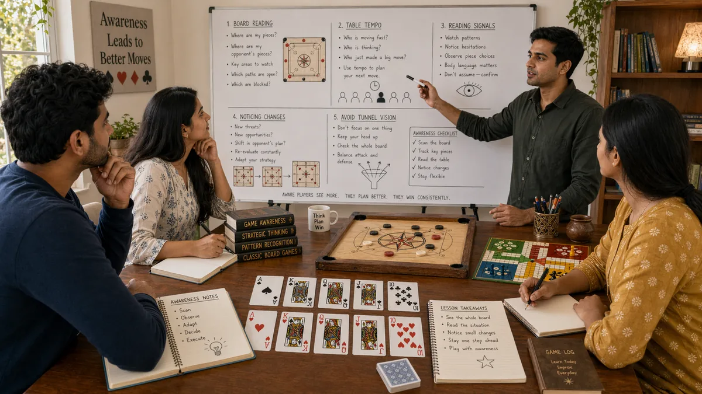

Introduction
Desi Game Game Awareness matters because game awareness shapes how readers interpret pressure, timing, and trade-offs inside traditional South Asian games. A page like this is most useful when it explains not only what to do, but why a choice becomes stronger or weaker as the situation changes.
This guide keeps the explanation practical. It shows how game awareness connects to board position, card order, turn rhythm, tempo shifts, and trade-offs between safety and initiative, where beginners usually misread the situation, and how to turn the idea into a repeatable habit.
The article is also written for human readability, not just keyword coverage. Instead of relying on thin summaries, it explains the reasoning behind stronger choices, the trade-offs behind weaker ones, and the kinds of examples readers can recognize from their own sessions.
Overview

What Is Game Awareness?
Game awareness is the practice of handling one important layer of traditional South Asian games in a more deliberate way. It becomes useful when players stop reacting only to the last move and start looking at context, options, and consequences. In practical terms, it helps readers judge when a line is solid, when it is thin, and when it only looks attractive on the surface.
A readable guide should make that judgment easier. It should show how the topic appears in ordinary positions, how it affects later decisions, and why small differences in context can change the best response.
1. See More Than Your Own Plan
Game awareness starts when readers stop looking only at their own next move. Strong awareness includes score, tempo, pressure points, and how other players are likely to interpret the same position.
This part of game awareness matters because see more than your own plan changes how a session is read. Once readers notice these shifts earlier, the position feels more connected and less random, which makes later planning more realistic.
A useful exercise is to pause after an important turn or hand and describe how see more than your own plan is affecting the wider position. If that description mentions only your own plan and not the wider table or board, awareness is probably still too narrow.
2. Track the Shape of the Session
A session has a shape. Sometimes it is controlled and patient. Sometimes it is speeding up. Knowing that shape matters because the same move can feel safe in one rhythm and fragile in another.
This part of game awareness matters because track the shape of the session changes how a session is read. Once readers notice these shifts earlier, the position feels more connected and less random, which makes later planning more realistic.
A useful exercise is to pause after an important turn or hand and describe how track the shape of the session is affecting the wider position. If that description mentions only your own plan and not the wider table or board, awareness is probably still too narrow.
3. Notice What Is Changing
Awareness improves when readers look for change rather than for fixed truths. A player who was passive earlier may become active when pressure rises. A once-safe route can become exposed after one small shift.
This part of game awareness matters because notice what is changing changes how a session is read. Once readers notice these shifts earlier, the position feels more connected and less random, which makes later planning more realistic.
A useful exercise is to pause after an important turn or hand and describe how notice what is changing is affecting the wider position. If that description mentions only your own plan and not the wider table or board, awareness is probably still too narrow.
4. Watch the Quiet Signals
Not all useful information is dramatic. Often it comes from quiet signals: hesitation, repeated choices, overprotection, or a sudden change in confidence. These details rarely decide the game alone, but they sharpen the picture.
This part of game awareness matters because watch the quiet signals changes how a session is read. Once readers notice these shifts earlier, the position feels more connected and less random, which makes later planning more realistic.
A useful exercise is to pause after an important turn or hand and describe how watch the quiet signals is affecting the wider position. If that description mentions only your own plan and not the wider table or board, awareness is probably still too narrow.
5. Connect Information to Action
Awareness is only valuable when it affects a decision. After noticing something, the next question should be whether it changes the best line, the safest line, or the amount of risk that is acceptable.
This part of game awareness matters because connect information to action changes how a session is read. Once readers notice these shifts earlier, the position feels more connected and less random, which makes later planning more realistic.
A useful exercise is to pause after an important turn or hand and describe how connect information to action is affecting the wider position. If that description mentions only your own plan and not the wider table or board, awareness is probably still too narrow.
6. Avoid Tunnel Vision
Tunnel vision is common when players become attached to one promising route. The cure is a simple scan: what matters most for me, what matters most for the opponent, and what will matter one turn from now.
This part of game awareness matters because avoid tunnel vision changes how a session is read. Once readers notice these shifts earlier, the position feels more connected and less random, which makes later planning more realistic.
A useful exercise is to pause after an important turn or hand and describe how avoid tunnel vision is affecting the wider position. If that description mentions only your own plan and not the wider table or board, awareness is probably still too narrow.
7. Use Awareness to Stay Calm
Better awareness often reduces emotional play. When readers understand why pressure is rising, they are less likely to panic. They can respond to the position instead of reacting to the feeling.
This part of game awareness matters because use awareness to stay calm changes how a session is read. Once readers notice these shifts earlier, the position feels more connected and less random, which makes later planning more realistic.
A useful exercise is to pause after an important turn or hand and describe how use awareness to stay calm is affecting the wider position. If that description mentions only your own plan and not the wider table or board, awareness is probably still too narrow.
8. Train Awareness Deliberately
Awareness grows with deliberate observation. It helps to review a session by identifying the moment when the situation changed and asking whether that shift was noticed in time.
This part of game awareness matters because train awareness deliberately changes how a session is read. Once readers notice these shifts earlier, the position feels more connected and less random, which makes later planning more realistic.
A useful exercise is to pause after an important turn or hand and describe how train awareness deliberately is affecting the wider position. If that description mentions only your own plan and not the wider table or board, awareness is probably still too narrow.
Common Mistakes
- Watching only your own position and missing a broader tempo shift.
- Treating weak signals as certain information.
- Treating a single success as proof that the same line is always correct.
- Reacting to pressure before checking whether the position actually changed.
- Reviewing the outcome without reviewing the quality of the reasoning.
Summary
The most practical way to improve game awareness is to treat it as a repeatable habit rather than as a special trick. In traditional South Asian games, readers gain more from calm observation and consistent routines than from dramatic one-off plays. The strongest takeaway is to connect every idea back to context, trade-offs, and what the next decision will look like.
That balance is what keeps the page search-friendly without making it feel artificial. The keyword belongs in the article because it matches the topic, but the real value comes from clear reasoning, realistic examples, and language that a reader can stay with from beginning to end.